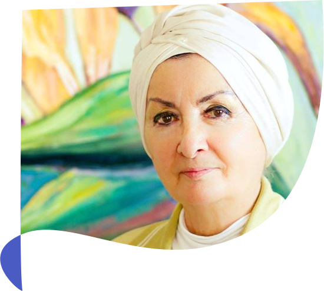

صُدفة تلك أم منحة من الله عزّ و جلّ هى التى دفعت دكتورة زينب عبد العزيز أستاذة الأدب الفرنسى و تاريخ الفنون بالجامعات المصرية إلى تكريس حياتها

أهلا بكم في
الموقع الرسمي
للدكتورة زينب عبد العزيز
عن الدكتورة
صُدفة تلك أم منحة من الله عزّ و جلّ هى التى دفعت دكتورة زينب عبد العزيز أستاذة الأدب الفرنسى و تاريخ الفنون بالجامعات المصرية إلى تكريس حياتها و جهودها على مدى عمرها لخدمة قضية شائكة بالغة التعقيد تدرأ بها عن عقيدة الإسلام ما يلّفقه له خصومه فى الخارج، فأصدرت ما يربو على عشرين كتابا علميا باللغة العربية و الفرنسية ، و ذرعت محافل المعرفة شرقا و غربا تذود عن العقيدة بحماس عرّضها لهجوم مكثّف.
ترجمة القرآن
كتب وابحاث
صُدفة تلك أم منحة من الله عزّ و جلّ هى التى دفعت دكتورة زينب عبد العزيز أستاذة الأدب الفرنسى و تاريخ الفنون بالجامعات المصرية إلى تكريس حياتها
مقالات
صُدفة تلك أم منحة من الله عزّ و جلّ هى التى دفعت دكتورة زينب عبد العزيز أستاذة الأدب الفرنسى و تاريخ الفنون بالجامعات المصرية إلى تكريس حياتها
أهم اعمال الدكتورة
و حسبُ كل عالم أن يكون مثل هذا العطاء من نصيبه ، و لكن هذه السيدة لم تقنع بهذا المجد التليد وحده ، فإذا هى تضيف إلى جهودها العلمية و جهادها الشاق عشق الفن التصويرى حتى غدت من نجومه اللامعات المبدعات ، تنأى بنفسها عن لعبة التجريد.
الأكثر قراءة
اهم مقالات الدتورة زينب عبدالعزيز ومختارات اعمالها

حوار الأديان
صُدفة تلك أم منحة من الله عزّ و جلّ هى التى دفعت دكتورة زينب عبد العزيز أستاذة الأدب الفرنسى
٢٤ يناير ٢٠١٩
حوار الأديان
صُدفة تلك أم منحة من الله عزّ و جلّ هى التى دفعت دكتورة زينب عبد العزيز أستاذة الأدب الفرنسى
٢٤ يناير ٢٠١٩
حوار الأديان
صُدفة تلك أم منحة من الله عزّ و جلّ هى التى دفعت دكتورة زينب عبد العزيز أستاذة الأدب الفرنسى
٢٤ يناير ٢٠١٩
كتب و ابحاث
الإتحاد العالمى لعلماء المسلمين مؤتمر سمات الخطاب الإسلامى
٢٤ يناير ٢٠١٩
الإتحاد العالمى لعلماء المسلمين مؤتمر سمات الخطاب الإسلامى
٢٤ يناير ٢٠١٩
فيديوهات
أراء وكتابات
“ صُدفة تلك أم منحة من الله عزّ و جلّ هى التى دفعت دكتورة زينب عبد العزيز أستاذة الأدب الفرنسى و تاريخ الفنون بالجامعات المصرية إلى تكريس حياتها و جهودها على مدى عمرها لخدمة قضية شائكة بالغة التعقيد تدرأ بها عن عقيدة الإسلام ما يلّفقه له خصومه فى الخارج. ”
د. ثروت عكاشة المعادى فى 5 يناير2005